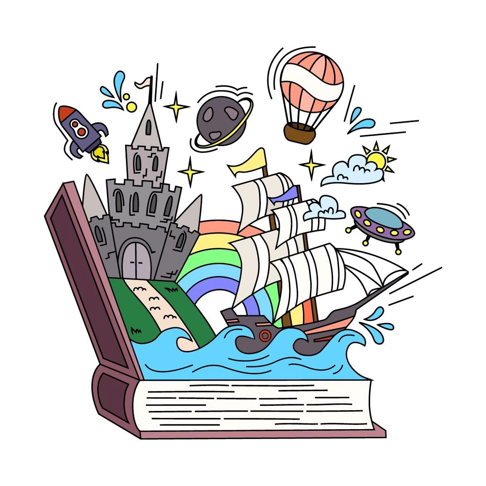
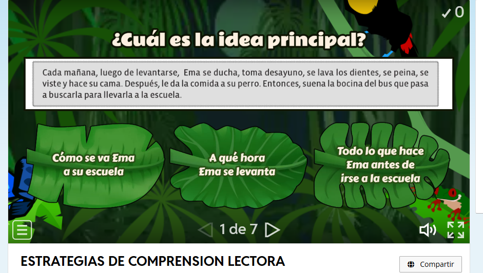

<h1 class="box-title idevice-element-in-content" data-original-title="Estrategias para Comprensión Lectora Literal" style="accent-color: rgb(11, 161, 161); border-color: rgb(216, 218, 229); border-style: solid; border-width: 1px; border-image: none 100% / 1 / 0 stretch;">Estrategias para Comprensión Lectora Inferencial</h1>
Competencia : Interpreta y deduce información implícita en diversos tipos de textos, estableciendo relaciones entre ideas principales y secundarias, identificando figuras literarias y construyendo significados a partir del análisis crítico y contextual del contenido leído. Contribuir en el mejoramiento de la comprensión lectora y fluidez verbal.
Objetivo: Fortalecer la comprensión lectora y la fluidez verbal en estudiantes de sexto grado mediante el análisis de textos, la identificación de ideas principales y secundarias y el reconocimiento de figuras literarias, promoviendo la interpretación inferencial y la construcción significativa del sentido del texto.

Temas:
Análisis de un texto
Identificación de ideas principales y secundarias en un texto.
Figuras literarias
Actividad 1.
¿Alguna vez quisiste entrar en un cuento como si estuvieras allí?
En esta sección te invitamos a sumergirte en la historia a través de un video explicativo que te ayudará a entender mejor lo que lees.
Verás personajes, escenarios y momentos clave del texto mientras una voz te guía paso a paso por lo que sucede.
Presta atención a los detalles, porque lo que verás no solo es una narración... es una forma de vivir la historia.
Después del video podrás responder preguntas, compartir lo que sentiste y descubrir cosas que quizás no habías notado al leer.
¡Dale play y entra a la historia! https://www.youtube.com/watch?v=1fZ6sduBRQU
Actividad 2.
¡Atención, investigadores del lenguaje!
En esta sección te convertirás en un detective literario. Tu misión será analizar un texto, seguir pistas, descubrir significados ocultos, identificar personajes, ideas principales y mucho más.
No solo vas a leer, vas a investigar cada palabra y cada oración como si escondieran un misterio.
¿Tienes lo necesario para resolver el caso?
¡Comienza el juego y descúbrelo! https://wordwall.net/es/resource/16114110

Actividad 3.
Activa tu mente.
Antes de jugar, escribir o analizar... necesitamos entender.
En esta sección encontrarás explicaciones claras y sencillas de los conceptos que te ayudarán a comprender mejor los textos, interpretar lo que lees y expresarte con más seguridad.
Aquí aprenderás qué es un artículo, qué significa narrador, qué partes tiene un cuento, y mucho más.
Puedes volver a esta sección siempre que tengas dudas. ¡Es tu caja de herramientas para leer mejor!
Lee con atención, reflexiona y guarda cada palabra como una nueva llave para entender el mundo de la lectura.